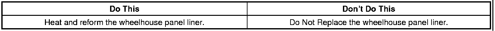
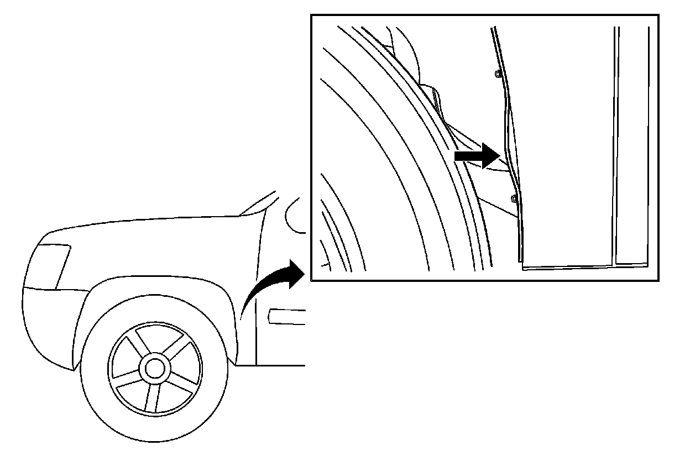
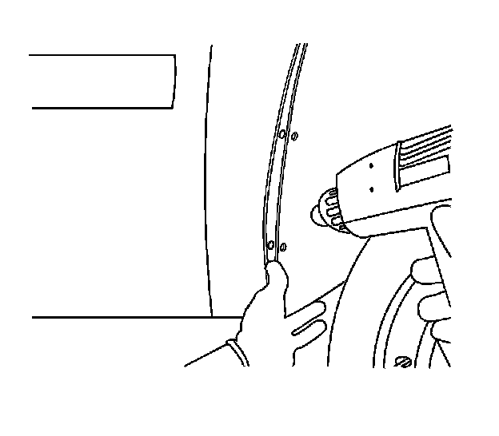
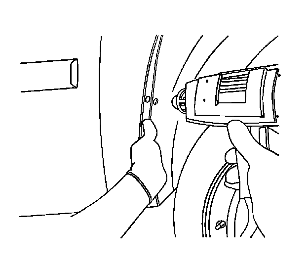
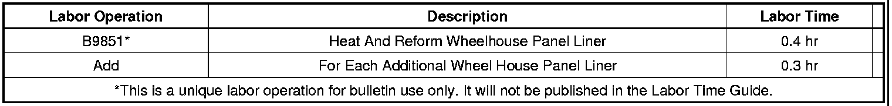

Body - Front/Rear Fender Liners Warped/Wavy
TECHNICALBulletin No.: 08-08-61-005B
Date: March 30, 2011
Subject: Front and/or Rear Wheelhouse Panel Liner Wavy or Warped (Apply Heat and Reform Wheelhouse Panel Liner)
Models:
2007-2012 Cadillac Escalade, Escalade ESV, Escalade EXT
2007-2012 Chevrolet Avalanche, Silverado, Suburban, Tahoe
2007-2012 GMC Sierra, Sierra Denali, Yukon, Yukon Denali, Yukon XL, Yukon XL Denali
Supercede:
This bulletin is being revised to add model years. Please discard Corporate Bulletin Number 08-08-61-005A (Section 08 - Body and Accessories).

Condition

Some customers may comment that the front or the rear wheelhouse panel liner is warped or wavy.
Correction
Heat and reform the wheelhouse panel liner.
1. Remove the lower wheelhouse panel liner fasteners.

2. Lift the wheelhouse panel liner away from the fender. With a heat gun, apply heat to the area that is warped or wavy.

3. Twist the liner back toward the fender while applying heat. It may take a couple of attempts to work out the warp or waviness in the area.
4. Reinstall the wheelhouse panel liner and fasteners.
Tighten
Tighten the fasteners to 2 Nm (18 lb in).
Warranty Information

For vehicles repaired under warranty, use the table.

Disclaimer